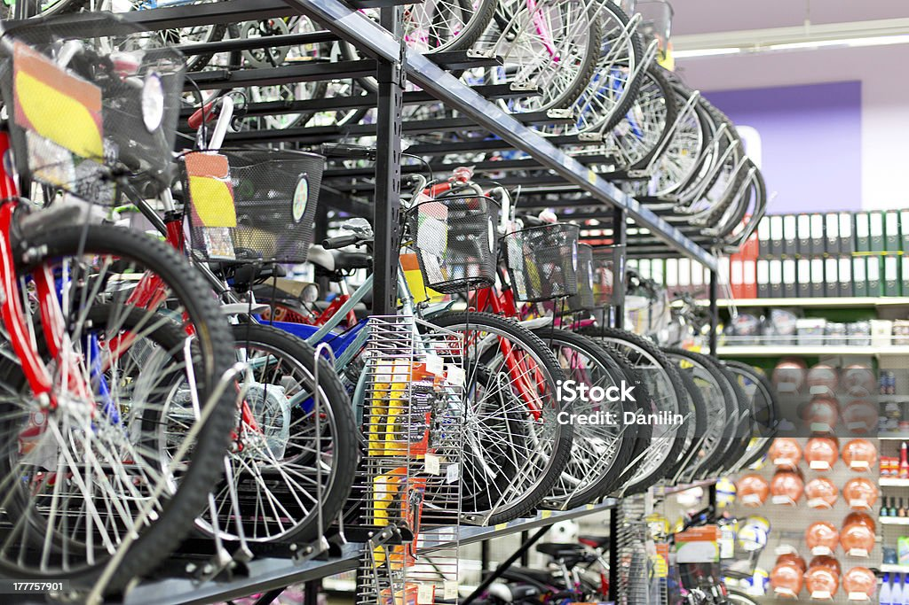

This project analyzed the financial and operational performance
of Vinnete hospital between the year 2021 and 2023.
We discovered through thorough analysis and visualization that the
hospital made more profit in 2022 than any other year and dermatology specialty was
the most lucrative. The insights derived and reccomendations made helped management
optimize resource allocation and make more strategic data driven decisions

As a Business Analyst for The Pizza Place, I analyzed sales data based on the business requirements and generated insights including;
revenue by pizza categories, order timing trends, pricing analysis and sales seasonality.
My reccomendations enabled the business optimize menu offerings, target promotional activities,
and adjust pricing strategies to promote revenue generation and business growth.

As a junior business analyst at ProTech Supplies, I conducted a comprehensive analysis of the company's
sales data and discovered peak performing regions, periods and most profitable product categories.
Reccomendations were made in alignment with the businesses strategic objectives.

As a business analyst for BikeGear Solutions, I conducted an in-depth
analysis of sales data to derive actionable insights that would optimize revenue generation,
enhance product positioning, and refine marketing strategies.

This project showcased the use of SQL-based data analysis to derive actionable business insights for an e-commerce business.
By leveraging structured queries, we identified key trends in customer behavior,
product performance, and financial transactions. Implementing these insights helped
Xpress SuperStore optimize its sales, reduce customer churn rate, and drive long-term business growth.

The goal of this analysis was to evaluate key aspects of a DVD rental business using SQL queries.
The primary objectives included: Understanding customer transaction patterns.
Assessing film inventory and rental preferences.
Identifying unique trends in actor involvement and film ratings.
Extracting geographical insights from the customer base.
As a business analyst, I conducted a data-driven analysis for 10Alytics,
a retail business specializing in various consumer products.
The goal of this project was to extract meaningful insights from the sales data to inform strategic decisions in revenue optimization,
product profitability, and customer segmentation.